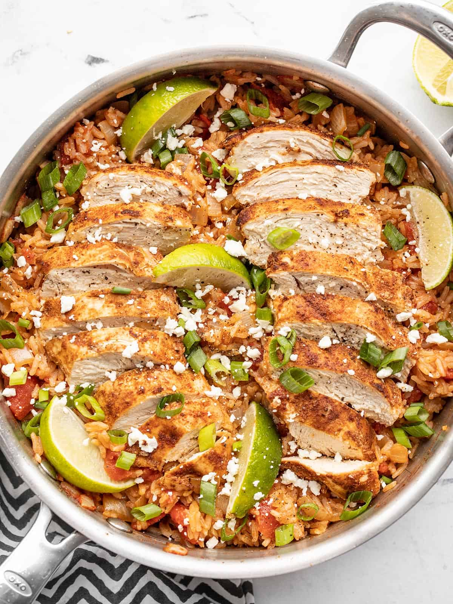

Chipotle Lime Chicken and Recipes

Chipotle Lime Chicken and Recipes
I’m all about cooking as much flavor into rice as possible and this Chipotle Lime Chicken and Rice is FLA-VOR-FUL! You’ve got a hefty dose of spices, tangy lime juice, and a bunch of flavor from the chicken that cooks right in the same pot.
This easy one-pot chipotle lime chicken and rice is tangy, smoky, spicy, and incredibly delicious. Makes a great main dish or meal prep!
Ingredients
- 1.5 teaspoon chipotle powder
- 1 teaspoon ground cumin
- 1/2 teaspoon garlic powder
- 1/2 teaspoon onion powder
- 1 lime
- 2 boneless, skinless chicken breast
- 1 yellow onion
- 1 15 oz can diced tomato
- 1 cup broth
- 1 cup white rice
Steps
- Combine the chipotle powder, cumin, garlic powder, onion powder, and salt in a bowl. Squeeze 2 Tbsp juice from the lime into a separate bowl (this should be about half a lime, save the other half to cut into wedges for garnish).
- Use a rolling pin or a mallet to gently pound the chicken breast to an even thickness (about ¾-inch thick). Use half of the prepared spice mix to coat both sides of the chicken pieces (reserve the other half of the spices for later).
- Heat the cooking oil in a large deep skillet over medium. Once hot, add the chicken and cook for a few minutes on each side, or until browned. The chicken does not need to be fully cooked, just browned on both sides. It will continue to cook with the rice.
- While the chicken is cooking, dice the onion. Remove the browned chicken from the skillet to a clean plate. Add the diced onion to the skillet and sauté until softened. Add the remaining spices and sauté for one minute more.
- Add the diced tomatoes (with juices), rice, chicken broth, and lime juice to the skillet with the onions. Stir to combine and dissolve any browned bits from the bottom of the skillet.
- Add the browned chicken back to the skillet. Place a lid on the skillet, turn the heat up to medium high, and allow the liquid to come up to a boil.
- Once it reaches a boil, turn the heat down to low, and allow the chicken and rice to simmer on low for 15 minutes. After 15 minutes, turn the heat off and let the skillet rest, without lifting the lid, for an additional 5 minutes.
- Finally, remove the lid, transfer the chicken to a cutting board. Fluff the rice to stir the tomato and onion back in. Slice the chicken then place it on top of the rice. Sprinkle with slice green onion and Cotija cheese. Add any remaining lime wedges, and serve!